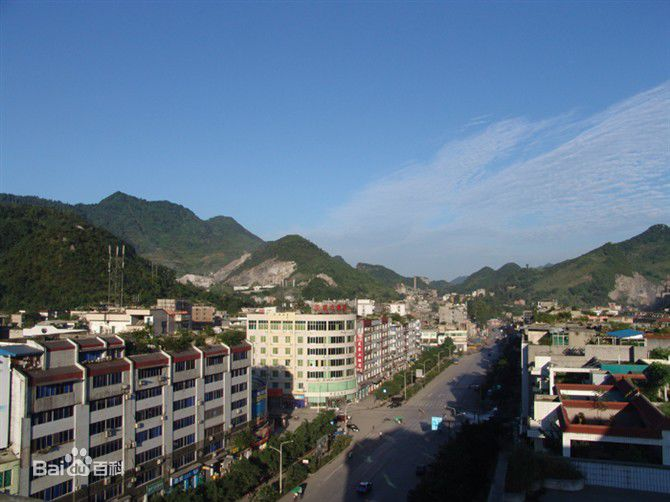

我的家乡
巡场

巡场镇地处四川盆地南缘，宜宾市中部地区，是珙县的北大门，1992年由原白皎乡、芙蓉乡、麻岭乡、老巡场镇撤并而成。是县城所在地和全县的政治、经济、文化中心，又是川、滇、黔结合部重要的交通枢纽和物资集散地。巡场镇东经104°47′，北纬28°23′，平均海拔348米，东北面与长宁县接壤，西北面毗邻高县，是珙县的北大门，北距宜宾市38公里，蜀南竹海36公里。
@151101007 Field ALLRIGHTS RESERVED